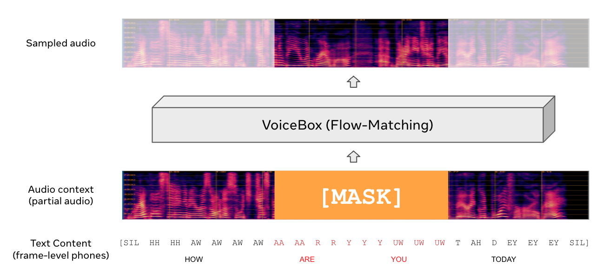

VoiceBox
Text-Guided Multilingual Universal Speech Generation at Scale
[Paper]
author 1, author 2, ...
author N-1, author N
Meta
Abstract.
We introduce VoiceBox, the most versatile and efficient multilingual
text-conditioned speech generative model at scale available. VoiceBox is a
text-guided non-autoregressive flow-matching model that can infill speech
at any position given any audio context. VoiceBox can be used as magic
eraser for speech to remove short term noise, such as the sound of a
barking dog in the backgroud, or as a speech editor to correct misspoken
words in the recording. VoiceBox can also transfer audio style from one
recording to another across languages. When paired with a speech
translation model, it can generate speech translation in the orignal
speaker's voice. Moreover, VoiceBox can also generate diverse speech
samples for the same text with various voices, speaking styles, background
noises, room acoustics. With such synthetic data, we can train a speech
recognition model that performs almost as good as training on real data,
whereas previous attempts of using synthetic data lead to almost 15%-75%
word error rate degradation.
Efficiency wise, VoiceBox generates speech with a real time factor of
XXX for a 20 second audio, which is YYY times faster than autoregressive
models of the same sizes.
This page is for research demonstration purposes only.
Model Overview

[TODO]
Application Overview
[TODO]
Speech Editing (denoising) Samples
| Text | Original Speech | Noisy Speech | Model input | Model Output #1 | Model Output #2 | Model Output #3 |
|---|---|---|---|---|---|---|
| Every plant in the grass is set formally grows perfectly and may be realized completely | ||||||
| His conduct and presence of mind in this emergence appeared conspicuous | ||||||
| I made her for only twenty oars because i thought few men would follow me for i was young fifteen years old | ||||||
| Bartley leaned over her shoulder without touching her and whispered in her ear you are giving me a chance yes | ||||||
| Although they went three feet to our two this gave us a moment of breathing time | ||||||
| Well so it is they are all witches and wizards mediums and spirit rappers and roaring radicals |
Speech Sampling
| Text | Sample #1 | Sample #2 | Sample #3 | Sample #4 | Sample #5 | Sample #6 |
|---|---|---|---|---|---|---|
| Every plant in the grass is set formally grows perfectly and may be realized completely | ||||||
| His conduct and presence of mind in this emergence appeared conspicuous | ||||||
| I made her for only twenty oars because i thought few men would follow me for i was young fifteen years old |
Voice Prompting (3 sec)
| Prompt Text | Prompt | Sample #1 | Sample #2 | Sample #3 | |
|---|---|---|---|---|---|
| Target Text: "Yesterday things went on just as usual" | |||||
| Speaker #1 | And as a mortal apollo sought to earn his bread amongst men | ||||
| Speaker #2 | She's prettier than ever to day and is enjoying herself | ||||
| Speaker #3 | A prisoner refractory your reverence said the watchman | ||||
| Speaker #4 | Now his middle horse was being almost dragged by the other two | ||||
| Target Text: "I see a crowd in one corner of the garden everybody standing still and looking up" | |||||
| Speaker #1 | And as a mortal apollo sought to earn his bread amongst men | ||||
| Speaker #2 | She's prettier than ever to day and is enjoying herself | ||||
| Speaker #3 | A prisoner refractory your reverence said the watchman | ||||
| Speaker #4 | Now his middle horse was being almost dragged by the other two | ||||
| Target Text: "VoiceBox is a powerful generative model for speech that can perform tasks such as editing speech style transfer and diverse sample generation" | |||||
| Speaker #1 | And as a mortal apollo sought to earn his bread amongst men | ||||
| Speaker #2 | She's prettier than ever to day and is enjoying herself | ||||
| Speaker #3 | A prisoner refractory your reverence said the watchman | ||||
| Speaker #4 | Now his middle horse was being almost dragged by the other two | ||||
Voice Prompting (6 sec)
| Prompt Text | Prompt | Sample #1 | Sample #2 | Sample #3 | |
|---|---|---|---|---|---|
| Target Text: "Yesterday things went on just as usual" | |||||
| Speaker #1 | However i didn't pay much attention to that being at the time almighty busy holding down my card games | ||||
| Speaker #2 | Ultimately they are the creations not of a man who desired to be but of a spirit which sought to know | ||||
| Speaker #3 | Love between man and woman is founded on the mating instinct and is not free from desire and self seeking | ||||
| Speaker #4 | Dorriforth read on and seemed afraid of looking up lest he should see what he could not have pardoned | ||||
| Target Text: "I see a crowd in one corner of the garden everybody standing still and looking up" | |||||
| Speaker #1 | However i didn't pay much attention to that being at the time almighty busy holding down my card games | ||||
| Speaker #2 | Ultimately they are the creations not of a man who desired to be but of a spirit which sought to know | ||||
| Speaker #3 | Love between man and woman is founded on the mating instinct and is not free from desire and self seeking | ||||
| Speaker #4 | Dorriforth read on and seemed afraid of looking up lest he should see what he could not have pardoned | ||||
| Target Text: "VoiceBox is a powerful generative model for speech that can perform tasks such as editing speech style transfer and diverse sample generation" | |||||
| Speaker #1 | However i didn't pay much attention to that being at the time almighty busy holding down my card games | ||||
| Speaker #2 | Ultimately they are the creations not of a man who desired to be but of a spirit which sought to know | ||||
| Speaker #3 | Love between man and woman is founded on the mating instinct and is not free from desire and self seeking | ||||
| Speaker #4 | Dorriforth read on and seemed afraid of looking up lest he should see what he could not have pardoned | ||||
Voice Prompting (10 sec)
| Prompt Text | Prompt | Sample #1 | Sample #2 | Sample #3 | |
|---|---|---|---|---|---|
| Target Text: "Yesterday things went on just as usual" | |||||
| Speaker #1 | We had then but little of that minute and accurate knowledge of the interior of the continent which was requisite for a determination of the problem | ||||
| Speaker #2 | Margaret was preparing her mother's worsted work and rather shrinking from the thought of the long evening and wishing bed time were come that she might go over the events of the day again | ||||
| Speaker #3 | To the pickle add two large onions cut in quarters two fresh carrots and about one ounce of mixed whole allspice black peppers cloves and bay leaves | ||||
| Speaker #4 | David was sober enough now and went about his work with a grim set to his lips and a spark in his eyes that made the three women look at one another pale with unspoken apprehension | ||||
| Target Text: "I see a crowd in one corner of the garden everybody standing still and looking up" | |||||
| Speaker #1 | We had then but little of that minute and accurate knowledge of the interior of the continent which was requisite for a determination of the problem | ||||
| Speaker #2 | Margaret was preparing her mother's worsted work and rather shrinking from the thought of the long evening and wishing bed time were come that she might go over the events of the day again | ||||
| Speaker #3 | To the pickle add two large onions cut in quarters two fresh carrots and about one ounce of mixed whole allspice black peppers cloves and bay leaves | ||||
| Speaker #4 | David was sober enough now and went about his work with a grim set to his lips and a spark in his eyes that made the three women look at one another pale with unspoken apprehension | ||||
| Target Text: "VoiceBox is a powerful generative model for speech that can perform tasks such as editing speech style transfer and diverse sample generation" | |||||
| Speaker #1 | We had then but little of that minute and accurate knowledge of the interior of the continent which was requisite for a determination of the problem | ||||
| Speaker #2 | Margaret was preparing her mother's worsted work and rather shrinking from the thought of the long evening and wishing bed time were come that she might go over the events of the day again | ||||
| Speaker #3 | To the pickle add two large onions cut in quarters two fresh carrots and about one ounce of mixed whole allspice black peppers cloves and bay leaves | ||||
| Speaker #4 | David was sober enough now and went about his work with a grim set to his lips and a spark in his eyes that made the three women look at one another pale with unspoken apprehension | ||||
Cross-Lingual Style Transfer
| Prompt Gender | Original Gender | Original Voice | Prompt Voice | Sample 1 | Sample 2 | |
|---|---|---|---|---|---|---|
| French to English | ||||||
| Target Text: "Thus they walked in the twilight across the fields and through the narrow streets beyond that lay between westminster and holborn in front tripped margaret beside her stately cavalier" | ||||||
| Male | Male | Dont il jouait avec beaucoup dexpression mais la nuit seulement au milieu de la plus secrte obscurit lorsque le nautilus sendormait dans les dserts de locan | ||||
| Target Text: "Indeed it scarcely needed a sailors eye to suspect something amiss she was a small barque apparently between three hundred and fifty and four hundred tons" | ||||||
| Male | Female | Dont il jouait avec beaucoup dexpression mais la nuit seulement au milieu de la plus secrte obscurit lorsque le nautilus sendormait dans les dserts de locan | ||||
| Target Text: "The message and monition of the figure was that resistance would be hopeless that if blood flowed woe to him who shed it thus spoke the figure and vanished" | ||||||
| Female | Male | Et lguer mes livres des personnes capables den faire bon usage jen ai un entre autres dont je veux faire prsent votre majest cest un livre fort prcieux et trs digne dtre soigneusement gard dans votre trsor | ||||
| Target Text: "In the evening before she went to bed she would always go in and repeat a little of the sutra and leave as soon as she thought ning was getting sleepy" | ||||||
| Female | Female | Ne voyez-vous pas quen ce moment le paragraphe mme de sa lettre qui me donnait la nouvelle passe devant ses yeux elle se rappelle ma bvue et ne peut prter attention rien dautre | ||||
| French to German | ||||||
| Target Text: "Habt ihr mathematik getrieben war eine meiner lieblingswissenschaften arithmetik geometrie natrlich feldmesserei" | ||||||
| Male | Male | Dont il jouait avec beaucoup dexpression mais la nuit seulement au milieu de la plus secrte obscurit lorsque le nautilus sendormait dans les dserts de locan | ||||
| Target Text: "Hohe leinengeftterte pelzmtzen aus hundefellen warme fustlinge aus katzenfellen und gut schlieende pelzjacken" | ||||||
| Male | Female | En ce moment il donnait certaines marques dimpatience allant venant ne pouvant tenir en place cet homme se nommait fix | ||||
| Target Text: "Wenn es euch recht ist soll es mir ein vergngen sein antwortete ich henry hatte seit ich abgestiegen war noch nichts gesagt sondern mich nur immer kopfschttelnd angesehen" | ||||||
| Female | Male | Non mlix petite musicienne tu es une honnte amie hier tu ne mas pas refus de changer ta flte pour une autre quand je dsesprais daccomplir un amour plein de difficults mais tu es sre | ||||
| Target Text: "Eine gebieterisch unwillige bewegung wehrte jeden versuch einer einmischung ab und mit einem hflichen neigen des kopfes verlie er ohne hast den raum" | ||||||
| Female | Female | Voici quon a port au tombeau pittakos charg dannes beaucoup sont morts que jai connus et celle qui vit est pour moi comme si elle ntait plus | ||||
| French to Polish | ||||||
| Target Text: "Nie mogli doj do sklepu zgubili drog i ledwo trafili z powrotem nie poznawali miasta wszystkie ulice byy jak przestawione" | ||||||
| Male | Male | Dont il jouait avec beaucoup dexpression mais la nuit seulement au milieu de la plus secrte obscurit lorsque le nautilus sendormait dans les dserts de locan | ||||
| Target Text: "Ktokolwiek jeste poczciwy czowieku co mi zachowa od mki doyj ty szczcia i pnego wieku i pokj tobie i dziki widzisz przed sob obraz grzesznej duszy" | ||||||
| Male | Female | Dont il jouait avec beaucoup dexpression mais la nuit seulement au milieu de la plus secrte obscurit lorsque le nautilus sendormait dans les dserts de locan | ||||
| Target Text: "Nie mogli doj do sklepu zgubili drog i ledwo trafili z powrotem nie poznawali miasta wszystkie ulice byy jak przestawione" | ||||||
| Female | Male | Non mlix petite musicienne tu es une honnte amie hier tu ne mas pas refus de changer ta flte pour une autre quand je dsesprais daccomplir un amour plein de difficults mais tu es sre | ||||
| Target Text: "Ktokolwiek jeste poczciwy czowieku co mi zachowa od mki doyj ty szczcia i pnego wieku i pokj tobie i dziki widzisz przed sob obraz grzesznej duszy" | ||||||
| Female | Female | Poupe si je voulais la revoir je te donnerais laphrodite comme le plus cher de mes cadeaux mais je veux penser quelle est tout fait morte | ||||
| French to Spanish | ||||||
| Target Text: "Y el que hace de viejo toma la barba blanca y se pinta la cara el que hace de gobernador de colorado y de negro por encima de todo en lo ms alto de la pared hay una estatua de buda" | ||||||
| Male | Male | Dont il jouait avec beaucoup dexpression mais la nuit seulement au milieu de la plus secrte obscurit lorsque le nautilus sendormait dans les dserts de locan | ||||
| Target Text: "Al salir de barcelona volvi don quijote a mirar el sitio donde haba cado y dijo aqu fue troya aqu mi desdicha" | ||||||
| Male | Female | Dont il jouait avec beaucoup dexpression mais la nuit seulement au milieu de la plus secrte obscurit lorsque le nautilus sendormait dans les dserts de locan | ||||
| Target Text: "Mirbalo el cannigo y admirbase de ver la extraeza de su grande locura y de que en cuanto hablaba y responda mostraba tener bonsimo entendimiento" | ||||||
| Female | Male | Pour surplus de prcaution elle sarrangea de manire ntre jamais seule avec lui elle retint si bien thrence son ct | ||||
| Target Text: "Que el amor y la aficin con facilidad ciegan los ojos del entendimiento tan necesarios para escoger estado y el del matrimonio est muy a peligro de errarse" | ||||||
| Female | Female | Ne voyez-vous pas quen ce moment le paragraphe mme de sa lettre qui me donnait la nouvelle passe devant ses yeux elle se rappelle ma bvue et ne peut prter attention rien dautre | ||||
| French to Portuguese | ||||||
| Target Text: "Posto que o frio fsis ou siene que pera nenhum cabo a sombra inclina o bootes gelado e a linha ardente temessem o teu nome geralmente" | ||||||
| Male | Male | Dont il jouait avec beaucoup dexpression mais la nuit seulement au milieu de la plus secrte obscurit lorsque le nautilus sendormait dans les dserts de locan | ||||
| Target Text: "Julguei-a uma apario anglica que baixava para trazer-nos a palma do martrio a anunciar os transes deste horto em que estvamos recordando as agonias da polnia" | ||||||
| Male | Female | En ce moment il donnait certaines marques dimpatience allant venant ne pouvant tenir en place cet homme se nommait fix | ||||
| Target Text: "Entre o remoto istro e o claro estreito onde hele deixou com o nome a vida esto os traces de robusto peito do fero marte ptria to querida" | ||||||
| Female | Male | Non mlix petite musicienne tu es une honnte amie hier tu ne mas pas refus de changer ta flte pour une autre quand je dsesprais daccomplir un amour plein de difficults mais tu es sre | ||||
| Target Text: "Na serenidade altiva que ela mostrava neste instante conheci-lhe uma resoluo extrema hedwige queria tambm ser prisioneira para sofrer comigo as dores do desterro" | ||||||
| Female | Female | Au nom de dieu gardez-vous bien daller publier ce mystre vous moquez-vous dit lautre ah vous ne savez gure quelle je suis allez ne craignez rien | ||||
| English to French | ||||||
| Target Text: "Dont il jouait avec beaucoup dexpression mais la nuit seulement au milieu de la plus secrte obscurit lorsque le nautilus sendormait dans les dserts de locan" | ||||||
| Male | Male | Thus they walked in the twilight across the fields and through the narrow streets beyond that lay between westminster and holborn in front tripped margaret beside her stately cavalier | ||||
| Target Text: "Non mlix petite musicienne tu es une honnte amie hier tu ne mas pas refus de changer ta flte pour une autre quand je dsesprais daccomplir un amour plein de difficults mais tu es sre" | ||||||
| Male | Female | Thus they walked in the twilight across the fields and through the narrow streets beyond that lay between westminster and holborn in front tripped margaret beside her stately cavalier | ||||
| Target Text: "En ce moment il donnait certaines marques dimpatience allant venant ne pouvant tenir en place cet homme se nommait fix" | ||||||
| Female | Male | Youd better stay up here ken said ill go down on the platform but try to get down in time to get on the train he takes a local train came into the station shortly after ken descended the stairs | ||||
| Target Text: "Quelles se retirent si elles veulent dit thrence qui tait aussi ple mais aussi ferme que lui moi je dois tre l pour mon frre sil y a du sang arrter" | ||||||
| Female | Female | Youd better stay up here ken said ill go down on the platform but try to get down in time to get on the train he takes a local train came into the station shortly after ken descended the stairs | ||||
| English to German | ||||||
| Target Text: "Darum wnschte ich mir diese nun da ihr nicht auszuweichen war recht schnell herbei dieser wunsch sollte in erfllung gehen denn es war erst wenig nach mittag so sahen wir sam hawkens auf uns zukommen" | ||||||
| Male | Male | But if peace returns and i am able to build a house it shall have hiding places wells tanks deep dungeons hollow wall | ||||
| Target Text: "Er wird eben eine bessere natur haben als ich sagte peter gedankenvoll aber das ist doch nicht meine schuld dass ich so empfindlich geschaffen bin und das ist dein einziger fehler" | ||||||
| Male | Female | An object is said that is nothing more than justice with the relation i stood in it was not likely i should think myself bound by all the forms that are made to bind strangers | ||||
| Target Text: "Was hast du mit dem kind im sinn warum hast du es gleich mit heimgenommen es wird denk ich bei jemandem sein mssen ich bin der vetter gtti und andere verwandte hat es keine mehr" | ||||||
| Female | Male | Although andrea had been so careful in asking directions from madame giovanna when once out of his own street he threaded the net of alleys and canals as if quite at home there | ||||
| Target Text: "Da beabsichtigt wird die ttige dankbarkeit die sie in zahlreichen briefen in aussicht gestellt haben baldigst in anspruch zu nehmen" | ||||||
| Female | Female | Indeed it scarcely needed a sailors eye to suspect something amiss she was a small barque apparently between three hundred and fifty and four hundred tons | ||||
| English to Polish | ||||||
| Target Text: "Ale taki cel byby niedostateczn pobudk do zbrodni sam holmes powiada e nigdy jeszcze nie zdarzya mu si sprawa tak zawia pragnem ju jak najprdzej odda j w rce mojego przyjaciela" | ||||||
| Male | Male | Suppose us to be of this sort and give us an account of the whole design how from the very beginning it was carried on what company you kept and what particular discourse you had that day | ||||
| Target Text: "Ktokolwiek jeste poczciwy czowieku co mi zachowa od mki doyj ty szczcia i pnego wieku i pokj tobie i dziki widzisz przed sob obraz grzesznej duszy" | ||||||
| Male | Female | But if peace returns and i am able to build a house it shall have hiding places wells tanks deep dungeons hollow wall | ||||
| Target Text: "Cay smutny i jaowy olimp widncy od lat w tym muzeum gipsw zmierzch tego pokoju mtnia i za dnia" | ||||||
| Female | Male | Although andrea had been so careful in asking directions from madame giovanna when once out of his own street he threaded the net of alleys and canals as if quite at home there | ||||
| Target Text: "Ktokolwiek jeste poczciwy czowieku co mi zachowa od mki doyj ty szczcia i pnego wieku i pokj tobie i dziki widzisz przed sob obraz grzesznej duszy" | ||||||
| Female | Female | Men shout at the sight of their kings shall we offer no loud hosannahs to the son of david verse four for the word of the lord is right and all his works are done in truth | ||||
| English to Spanish | ||||||
| Target Text: "La verdad que diga respondi sancho las desaforadas narices de aquel escudero me tienen atnito y lleno de espanto y no me atrevo a estar junto a l" | ||||||
| Male | Male | Where shall we go for our garlands glad at the falling of the year when the burnt up banks are yellow and sad when the boughs are yellow and sere | ||||
| Target Text: "Yo seores por mis pecados he estudiado cnones en salamanca y pcome algn tanto de decir mi razn con palabras claras llanas y significantes" | ||||||
| Male | Female | Where shall we go for our garlands glad at the falling of the year when the burnt up banks are yellow and sad when the boughs are yellow and sere | ||||
| Target Text: "Era en el mes de noviembre el pobre juan que siempre haba guardado en el pensamiento la quimera de la venida de su hermano ahogado ahora por la desgracia comenz a alimentarla con afn" | ||||||
| Female | Male | Indeed it scarcely needed a sailors eye to suspect something amiss she was a small barque apparently between three hundred and fifty and four hundred tons | ||||
| Target Text: "Estas dos seoras fueron desdichadsimas por no haber nacido en esta edad y yo sobre todos desdichado en no haber nacido en la suya" | ||||||
| Female | Female | I and my fellow oak trees shall pass away but the sunshine shall be spread over the land and make it dry then | ||||
| English to Portuguese | ||||||
| Target Text: "Entre o remoto istro e o claro estreito onde hele deixou com o nome a vida esto os traces de robusto peito do fero marte ptria to querida" | ||||||
| Male | Male | Suppose us to be of this sort and give us an account of the whole design how from the very beginning it was carried on what company you kept and what particular discourse you had that day | ||||
| Target Text: "A ideia encarna em peitos que palpitam o seu pulsar so chamas que crepitam paixes ardentes como vivos soes" | ||||||
| Male | Female | There is evidence that the purpose of the advance school was to train these employees for political missions the advance manual for the surrogate program which was distributed at the school states at page four quote | ||||
| Target Text: "Posto que o frio fsis ou siene que pera nenhum cabo a sombra inclina o bootes gelado e a linha ardente temessem o teu nome geralmente" | ||||||
| Female | Male | In the evening before she went to bed she would always go in and repeat a little of the sutra and leave as soon as she thought ning was getting sleepy | ||||
| Target Text: "Julguei-a uma apario anglica que baixava para trazer-nos a palma do martrio a anunciar os transes deste horto em que estvamos recordando as agonias da polnia" | ||||||
| Female | Female | Youd better stay up here ken said ill go down on the platform but try to get down in time to get on the train he takes a local train came into the station shortly after ken descended the stairs | ||||
| German to French | ||||||
| Target Text: "En ce moment il donnait certaines marques dimpatience allant venant ne pouvant tenir en place cet homme se nommait fix" | ||||||
| Male | Male | Was hast du mit dem kind im sinn warum hast du es gleich mit heimgenommen es wird denk ich bei jemandem sein mssen ich bin der vetter gtti und andere verwandte hat es keine mehr | ||||
| Target Text: "Ne voyez-vous pas quen ce moment le paragraphe mme de sa lettre qui me donnait la nouvelle passe devant ses yeux elle se rappelle ma bvue et ne peut prter attention rien dautre" | ||||||
| Male | Female | Du bist heute nicht so frohen mutes wie gestern emil macht das trbe wetter auf dich trben eindruck oder sind es wieder die dummen geldgeschichten die dir im kopfe liegen beides meine beste beides | ||||
| Target Text: "Dont il jouait avec beaucoup dexpression mais la nuit seulement au milieu de la plus secrte obscurit lorsque le nautilus sendormait dans les dserts de locan" | ||||||
| Female | Male | Das schne pferd hat dunkelbraune flgel und heilige kraft in jedem gliede wohnt und herrlich ber tal und hgel er mit dem knigsadler thront | ||||
| Target Text: "Ce fut pour y parvenir que je passai le plus tt possible une apparente tranquillit propre calmer les effets de cet tat violent sans en affaiblir limpression ma transition fut" | ||||||
| Female | Female | Das schne pferd hat dunkelbraune flgel und heilige kraft in jedem gliede wohnt und herrlich ber tal und hgel er mit dem knigsadler thront | ||||
| German to English | ||||||
| Target Text: "Thus they walked in the twilight across the fields and through the narrow streets beyond that lay between westminster and holborn in front tripped margaret beside her stately cavalier" | ||||||
| Male | Male | Und dazu ein frchterliches geschrei ausstoend in der kche sa die base auf einem schemel und schlte kartoffeln als ihr mann die stubentr wieder zugemacht hatte sagte sie | ||||
| Target Text: "I and my fellow oak trees shall pass away but the sunshine shall be spread over the land and make it dry then" | ||||||
| Male | Female | Da kam wieder der groll ja ja mein lieber vater dein sohn steht wieder einmal ganz verlassen da die kameraden lassen ihn im stich | ||||
| Target Text: "There is evidence that the purpose of the advance school was to train these employees for political missions the advance manual for the surrogate program which was distributed at the school states at page four quote" | ||||||
| Female | Male | Eine gebieterisch unwillige bewegung wehrte jeden versuch einer einmischung ab und mit einem hflichen neigen des kopfes verlie er ohne hast den raum | ||||
| Target Text: "And he gazed about him for something horrible there was nothing at all however in that way to be seen indeed there was no further confusion than ends of ropes lying about" | ||||||
| Female | Female | Er wird eben eine bessere natur haben als ich sagte peter gedankenvoll aber das ist doch nicht meine schuld dass ich so empfindlich geschaffen bin und das ist dein einziger fehler | ||||
| German to Polish | ||||||
| Target Text: "Cay smutny i jaowy olimp widncy od lat w tym muzeum gipsw zmierzch tego pokoju mtnia i za dnia" | ||||||
| Male | Male | Wiseli holte es aus einer ecke hervor wo es bis jetzt gelegen hatte und schaute mit erstaunen zu wie der vetter gtti das bndelchen am oberen ende des pakets auf die ofenbank hin drckte dass es nicht so ganz kugelrund bleibe | ||||
| Target Text: "Ktokolwiek jeste poczciwy czowieku co mi zachowa od mki doyj ty szczcia i pnego wieku i pokj tobie i dziki widzisz przed sob obraz grzesznej duszy" | ||||||
| Male | Female | Du bist heute nicht so frohen mutes wie gestern emil macht das trbe wetter auf dich trben eindruck oder sind es wieder die dummen geldgeschichten die dir im kopfe liegen beides meine beste beides | ||||
| Target Text: "Ale taki cel byby niedostateczn pobudk do zbrodni sam holmes powiada e nigdy jeszcze nie zdarzya mu si sprawa tak zawia pragnem ju jak najprdzej odda j w rce mojego przyjaciela" | ||||||
| Female | Male | Sein name war vor der times und ihren spalten er braucht sie nicht tief eingegraben in die tafeln der geschichte steht oliver cromwell | ||||
| Target Text: "Pochwyci mnie przykry paroksyzm takiej apatyji e przez par dni targaem si w bezsilnej mce nie miaem si nawet na ucieczk do ciebie czemu nie mog by zawsze przy tobie" | ||||||
| Female | Female | Eine gebieterisch unwillige bewegung wehrte jeden versuch einer einmischung ab und mit einem hflichen neigen des kopfes verlie er ohne hast den raum | ||||
| German to Spanish | ||||||
| Target Text: "Era en el mes de noviembre el pobre juan que siempre haba guardado en el pensamiento la quimera de la venida de su hermano ahogado ahora por la desgracia comenz a alimentarla con afn" | ||||||
| Male | Male | Du kannst es ja schon brauchen so etwas wie du dort machst kann es dann machen so kannst du etwas besonderes tun du sagst ja immer die buben geben dir mehr zu tun als eben recht | ||||
| Target Text: "Sea pues la conclusin de mi pltica seor hidalgo que vuesa merced deje caminar a su hijo por donde su estrella le llama que siendo l tan buen estudiante como debe de ser" | ||||||
| Male | Female | Habt ihr mathematik getrieben war eine meiner lieblingswissenschaften arithmetik geometrie natrlich feldmesserei | ||||
| Target Text: "La verdad que diga respondi sancho las desaforadas narices de aquel escudero me tienen atnito y lleno de espanto y no me atrevo a estar junto a l" | ||||||
| Female | Male | Er wird eben eine bessere natur haben als ich sagte peter gedankenvoll aber das ist doch nicht meine schuld dass ich so empfindlich geschaffen bin und das ist dein einziger fehler | ||||
| Target Text: "Estas dos seoras fueron desdichadsimas por no haber nacido en esta edad y yo sobre todos desdichado en no haber nacido en la suya" | ||||||
| Female | Female | Steiner schttelte wieder den kopf und holte zu einer rede aus sehen sie herr doktor so ganz richtige knstler sind wir ja nicht gewesen | ||||
| German to Portuguese | ||||||
| Target Text: "Entre o remoto istro e o claro estreito onde hele deixou com o nome a vida esto os traces de robusto peito do fero marte ptria to querida" | ||||||
| Male | Male | Jetzt hat auch der herr rubesoier keinen rat mehr gewut wir sind verngstigt auf dem korridor gestanden und haben dumme gesichter gemacht | ||||
| Target Text: "Julguei-a uma apario anglica que baixava para trazer-nos a palma do martrio a anunciar os transes deste horto em que estvamos recordando as agonias da polnia" | ||||||
| Male | Female | Du bist heute nicht so frohen mutes wie gestern emil macht das trbe wetter auf dich trben eindruck oder sind es wieder die dummen geldgeschichten die dir im kopfe liegen beides meine beste beides | ||||
| Target Text: "Entre o remoto istro e o claro estreito onde hele deixou com o nome a vida esto os traces de robusto peito do fero marte ptria to querida" | ||||||
| Female | Male | Eine gebieterisch unwillige bewegung wehrte jeden versuch einer einmischung ab und mit einem hflichen neigen des kopfes verlie er ohne hast den raum | ||||
| Target Text: "Na serenidade altiva que ela mostrava neste instante conheci-lhe uma resoluo extrema hedwige queria tambm ser prisioneira para sofrer comigo as dores do desterro" | ||||||
| Female | Female | Hohe leinengeftterte pelzmtzen aus hundefellen warme fustlinge aus katzenfellen und gut schlieende pelzjacken | ||||
| Polish to French | ||||||
| Target Text: "Dont il jouait avec beaucoup dexpression mais la nuit seulement au milieu de la plus secrte obscurit lorsque le nautilus sendormait dans les dserts de locan" | ||||||
| Male | Male | Ale taki cel byby niedostateczn pobudk do zbrodni sam holmes powiada e nigdy jeszcze nie zdarzya mu si sprawa tak zawia pragnem ju jak najprdzej odda j w rce mojego przyjaciela | ||||
| Target Text: "Au nom de dieu gardez-vous bien daller publier ce mystre vous moquez-vous dit lautre ah vous ne savez gure quelle je suis allez ne craignez rien" | ||||||
| Male | Female | Nie mogli doj do sklepu zgubili drog i ledwo trafili z powrotem nie poznawali miasta wszystkie ulice byy jak przestawione | ||||
| Target Text: "Dont il jouait avec beaucoup dexpression mais la nuit seulement au milieu de la plus secrte obscurit lorsque le nautilus sendormait dans les dserts de locan" | ||||||
| Female | Male | Ktokolwiek jeste poczciwy czowieku co mi zachowa od mki doyj ty szczcia i pnego wieku i pokj tobie i dziki widzisz przed sob obraz grzesznej duszy | ||||
| Target Text: "Mais en mme temps javais tant de rage de ne pouvoir men mler que si on ne met retenu je me serais jet au milieu la chose me faisait dgot" | ||||||
| Female | Female | Ktokolwiek jeste poczciwy czowieku co mi zachowa od mki doyj ty szczcia i pnego wieku i pokj tobie i dziki widzisz przed sob obraz grzesznej duszy | ||||
| Polish to English | ||||||
| Target Text: "Suppose us to be of this sort and give us an account of the whole design how from the very beginning it was carried on what company you kept and what particular discourse you had that day" | ||||||
| Male | Male | Ale taki cel byby niedostateczn pobudk do zbrodni sam holmes powiada e nigdy jeszcze nie zdarzya mu si sprawa tak zawia pragnem ju jak najprdzej odda j w rce mojego przyjaciela | ||||
| Target Text: "Although andrea had been so careful in asking directions from madame giovanna when once out of his own street he threaded the net of alleys and canals as if quite at home there" | ||||||
| Male | Female | Ale taki cel byby niedostateczn pobudk do zbrodni sam holmes powiada e nigdy jeszcze nie zdarzya mu si sprawa tak zawia pragnem ju jak najprdzej odda j w rce mojego przyjaciela | ||||
| Target Text: "There is evidence that the purpose of the advance school was to train these employees for political missions the advance manual for the surrogate program which was distributed at the school states at page four quote" | ||||||
| Female | Male | Pochwyci mnie przykry paroksyzm takiej apatyji e przez par dni targaem si w bezsilnej mce nie miaem si nawet na ucieczk do ciebie czemu nie mog by zawsze przy tobie | ||||
| Target Text: "And he gazed about him for something horrible there was nothing at all however in that way to be seen indeed there was no further confusion than ends of ropes lying about" | ||||||
| Female | Female | Ktokolwiek jeste poczciwy czowieku co mi zachowa od mki doyj ty szczcia i pnego wieku i pokj tobie i dziki widzisz przed sob obraz grzesznej duszy | ||||
| Polish to German | ||||||
| Target Text: "Denn in dem einen wrdet ihr zerplatzen und in dem anderen an einer bsen indigestion zugrunde gehen da ihr doch eure percke mit verschlingen msstet die euer magen doch unmglich verdauen knnte" | ||||||
| Male | Male | Ale taki cel byby niedostateczn pobudk do zbrodni sam holmes powiada e nigdy jeszcze nie zdarzya mu si sprawa tak zawia pragnem ju jak najprdzej odda j w rce mojego przyjaciela | ||||
| Target Text: "Eine gebieterisch unwillige bewegung wehrte jeden versuch einer einmischung ab und mit einem hflichen neigen des kopfes verlie er ohne hast den raum" | ||||||
| Male | Female | Chtnie bym zosta i oprowadzi pana po tej rezydencyi ale barrymore speni to lepiej ode mnie musz wraca do widzenia a prosz pamita e jestem na paskie usugi o kadej porze dnia i nocy | ||||
| Target Text: "Du bist heute nicht so frohen mutes wie gestern emil macht das trbe wetter auf dich trben eindruck oder sind es wieder die dummen geldgeschichten die dir im kopfe liegen beides meine beste beides" | ||||||
| Female | Male | Ktokolwiek jeste poczciwy czowieku co mi zachowa od mki doyj ty szczcia i pnego wieku i pokj tobie i dziki widzisz przed sob obraz grzesznej duszy | ||||
| Target Text: "Eine gebieterisch unwillige bewegung wehrte jeden versuch einer einmischung ab und mit einem hflichen neigen des kopfes verlie er ohne hast den raum" | ||||||
| Female | Female | Ktokolwiek jeste poczciwy czowieku co mi zachowa od mki doyj ty szczcia i pnego wieku i pokj tobie i dziki widzisz przed sob obraz grzesznej duszy | ||||
| Polish to Spanish | ||||||
| Target Text: "Era en el mes de noviembre el pobre juan que siempre haba guardado en el pensamiento la quimera de la venida de su hermano ahogado ahora por la desgracia comenz a alimentarla con afn" | ||||||
| Male | Male | Cay smutny i jaowy olimp widncy od lat w tym muzeum gipsw zmierzch tego pokoju mtnia i za dnia | ||||
| Target Text: "Que el amor y la aficin con facilidad ciegan los ojos del entendimiento tan necesarios para escoger estado y el del matrimonio est muy a peligro de errarse" | ||||||
| Male | Female | Chtnie bym zosta i oprowadzi pana po tej rezydencyi ale barrymore speni to lepiej ode mnie musz wraca do widzenia a prosz pamita e jestem na paskie usugi o kadej porze dnia i nocy | ||||
| Target Text: "Juan no lo supo sino tarde y con dao el nuevo gabinete pasados algunos das juzg que juan era un organista peligroso para el orden pblico" | ||||||
| Female | Male | Ktokolwiek jeste poczciwy czowieku co mi zachowa od mki doyj ty szczcia i pnego wieku i pokj tobie i dziki widzisz przed sob obraz grzesznej duszy | ||||
| Target Text: "Al salir de barcelona volvi don quijote a mirar el sitio donde haba cado y dijo aqu fue troya aqu mi desdicha" | ||||||
| Female | Female | Pochwyci mnie przykry paroksyzm takiej apatyji e przez par dni targaem si w bezsilnej mce nie miaem si nawet na ucieczk do ciebie czemu nie mog by zawsze przy tobie | ||||
| Polish to Portuguese | ||||||
| Target Text: "Entre o remoto istro e o claro estreito onde hele deixou com o nome a vida esto os traces de robusto peito do fero marte ptria to querida" | ||||||
| Male | Male | Ale taki cel byby niedostateczn pobudk do zbrodni sam holmes powiada e nigdy jeszcze nie zdarzya mu si sprawa tak zawia pragnem ju jak najprdzej odda j w rce mojego przyjaciela | ||||
| Target Text: "Na serenidade altiva que ela mostrava neste instante conheci-lhe uma resoluo extrema hedwige queria tambm ser prisioneira para sofrer comigo as dores do desterro" | ||||||
| Male | Female | Ale taki cel byby niedostateczn pobudk do zbrodni sam holmes powiada e nigdy jeszcze nie zdarzya mu si sprawa tak zawia pragnem ju jak najprdzej odda j w rce mojego przyjaciela | ||||
| Target Text: "Entre o remoto istro e o claro estreito onde hele deixou com o nome a vida esto os traces de robusto peito do fero marte ptria to querida" | ||||||
| Female | Male | Ktokolwiek jeste poczciwy czowieku co mi zachowa od mki doyj ty szczcia i pnego wieku i pokj tobie i dziki widzisz przed sob obraz grzesznej duszy | ||||
| Target Text: "A ideia encarna em peitos que palpitam o seu pulsar so chamas que crepitam paixes ardentes como vivos soes" | ||||||
| Female | Female | Ktokolwiek jeste poczciwy czowieku co mi zachowa od mki doyj ty szczcia i pnego wieku i pokj tobie i dziki widzisz przed sob obraz grzesznej duszy | ||||
| Spanish to French | ||||||
| Target Text: "Dont il jouait avec beaucoup dexpression mais la nuit seulement au milieu de la plus secrte obscurit lorsque le nautilus sendormait dans les dserts de locan" | ||||||
| Male | Male | La verdad que diga respondi sancho las desaforadas narices de aquel escudero me tienen atnito y lleno de espanto y no me atrevo a estar junto a l | ||||
| Target Text: "Nous ne pouvons rien par nous-mmes mais le dieu qui vous rappelle peut tout et nous devons galement sa bont vous le dsir constant de vous rejoindre lui" | ||||||
| Male | Female | Dime dnde los hallas ignorante o cmo los aplicas mentecato que para decir yo uno y aplicarle bien sudo y trabajo como si cavase | ||||
| Target Text: "Dont il jouait avec beaucoup dexpression mais la nuit seulement au milieu de la plus secrte obscurit lorsque le nautilus sendormait dans les dserts de locan" | ||||||
| Female | Male | Estas dos seoras fueron desdichadsimas por no haber nacido en esta edad y yo sobre todos desdichado en no haber nacido en la suya | ||||
| Target Text: "Et lguer mes livres des personnes capables den faire bon usage jen ai un entre autres dont je veux faire prsent votre majest cest un livre fort prcieux et trs digne dtre soigneusement gard dans votre trsor" | ||||||
| Female | Female | Al salir de barcelona volvi don quijote a mirar el sitio donde haba cado y dijo aqu fue troya aqu mi desdicha | ||||
| Spanish to English | ||||||
| Target Text: "Among these were a man and a lady the latter attended by a handsome young woman who were all three sufficiently striking in appearance to attract some notice in the throng" | ||||||
| Male | Male | Y al fuego me acerqu mientras el madero me daba su calor y pensativo vi sobre l extenuado y moribundo crispndose las manos al pobre nufrago | ||||
| Target Text: "In the evening before she went to bed she would always go in and repeat a little of the sutra and leave as soon as she thought ning was getting sleepy" | ||||||
| Male | Female | Mirbalo el cannigo y admirbase de ver la extraeza de su grande locura y de que en cuanto hablaba y responda mostraba tener bonsimo entendimiento | ||||
| Target Text: "Thus they walked in the twilight across the fields and through the narrow streets beyond that lay between westminster and holborn in front tripped margaret beside her stately cavalier" | ||||||
| Female | Male | Sea pues la conclusin de mi pltica seor hidalgo que vuesa merced deje caminar a su hijo por donde su estrella le llama que siendo l tan buen estudiante como debe de ser | ||||
| Target Text: "I and my fellow oak trees shall pass away but the sunshine shall be spread over the land and make it dry then" | ||||||
| Female | Female | Y lloraba desconsolado pero a pesar de todo estaban contentos porque se haban encontrado y se hacan mil caricias en el hocico | ||||
| Spanish to German | ||||||
| Target Text: "Sie senden immer kleine trupps voraus und nach den seiten sie haben ihre offiziere grad wie das militr und der hauptanfhrer ist stets ein erfahrener starker und mutiger hengst" | ||||||
| Male | Male | Y al fuego me acerqu mientras el madero me daba su calor y pensativo vi sobre l extenuado y moribundo crispndose las manos al pobre nufrago | ||||
| Target Text: "Ich ersuche sie herr kanzleirat diese letzten worte des angeklagten reinsdorf zu protokoll zu nehmen ich habe blo gesagt der zweck heiligt die mittel" | ||||||
| Male | Female | Era en el mes de noviembre el pobre juan que siempre haba guardado en el pensamiento la quimera de la venida de su hermano ahogado ahora por la desgracia comenz a alimentarla con afn | ||||
| Target Text: "Was hast du mit dem kind im sinn warum hast du es gleich mit heimgenommen es wird denk ich bei jemandem sein mssen ich bin der vetter gtti und andere verwandte hat es keine mehr" | ||||||
| Female | Male | Y lloraba desconsolado pero a pesar de todo estaban contentos porque se haban encontrado y se hacan mil caricias en el hocico | ||||
| Target Text: "Eine gebieterisch unwillige bewegung wehrte jeden versuch einer einmischung ab und mit einem hflichen neigen des kopfes verlie er ohne hast den raum" | ||||||
| Female | Female | Estas dos seoras fueron desdichadsimas por no haber nacido en esta edad y yo sobre todos desdichado en no haber nacido en la suya | ||||
| Spanish to Polish | ||||||
| Target Text: "Nie mogli doj do sklepu zgubili drog i ledwo trafili z powrotem nie poznawali miasta wszystkie ulice byy jak przestawione" | ||||||
| Male | Male | Mirbalo el cannigo y admirbase de ver la extraeza de su grande locura y de que en cuanto hablaba y responda mostraba tener bonsimo entendimiento | ||||
| Target Text: "Pochwyci mnie przykry paroksyzm takiej apatyji e przez par dni targaem si w bezsilnej mce nie miaem si nawet na ucieczk do ciebie czemu nie mog by zawsze przy tobie" | ||||||
| Male | Female | Mira el pordiosero es el de siempre pobrecito que viene deshecho cmo resiste parece imposible mrale cmo besa el mendrugo que de all le echaron | ||||
| Target Text: "Cay smutny i jaowy olimp widncy od lat w tym muzeum gipsw zmierzch tego pokoju mtnia i za dnia" | ||||||
| Female | Male | Que el amor y la aficin con facilidad ciegan los ojos del entendimiento tan necesarios para escoger estado y el del matrimonio est muy a peligro de errarse | ||||
| Target Text: "Ktokolwiek jeste poczciwy czowieku co mi zachowa od mki doyj ty szczcia i pnego wieku i pokj tobie i dziki widzisz przed sob obraz grzesznej duszy" | ||||||
| Female | Female | Sea pues la conclusin de mi pltica seor hidalgo que vuesa merced deje caminar a su hijo por donde su estrella le llama que siendo l tan buen estudiante como debe de ser | ||||
| Spanish to Portuguese | ||||||
| Target Text: "Entre o remoto istro e o claro estreito onde hele deixou com o nome a vida esto os traces de robusto peito do fero marte ptria to querida" | ||||||
| Male | Male | Paco de parte de luisa que s y a la otra vuelta luisa le dijo a pepito pepito de parte de asuncin que s y quedamos novios | ||||
| Target Text: "Na serenidade altiva que ela mostrava neste instante conheci-lhe uma resoluo extrema hedwige queria tambm ser prisioneira para sofrer comigo as dores do desterro" | ||||||
| Male | Female | Y al fuego me acerqu mientras el madero me daba su calor y pensativo vi sobre l extenuado y moribundo crispndose las manos al pobre nufrago | ||||
| Target Text: "Entre o remoto istro e o claro estreito onde hele deixou com o nome a vida esto os traces de robusto peito do fero marte ptria to querida" | ||||||
| Female | Male | Yo seores por mis pecados he estudiado cnones en salamanca y pcome algn tanto de decir mi razn con palabras claras llanas y significantes | ||||
| Target Text: "Julguei-a uma apario anglica que baixava para trazer-nos a palma do martrio a anunciar os transes deste horto em que estvamos recordando as agonias da polnia" | ||||||
| Female | Female | Al salir de barcelona volvi don quijote a mirar el sitio donde haba cado y dijo aqu fue troya aqu mi desdicha | ||||
| Portuguese to French | ||||||
| Target Text: "Dont il jouait avec beaucoup dexpression mais la nuit seulement au milieu de la plus secrte obscurit lorsque le nautilus sendormait dans les dserts de locan" | ||||||
| Male | Male | Entre o remoto istro e o claro estreito onde hele deixou com o nome a vida esto os traces de robusto peito do fero marte ptria to querida | ||||
| Target Text: "Quelles se retirent si elles veulent dit thrence qui tait aussi ple mais aussi ferme que lui moi je dois tre l pour mon frre sil y a du sang arrter" | ||||||
| Male | Female | Posto que o frio fsis ou siene que pera nenhum cabo a sombra inclina o bootes gelado e a linha ardente temessem o teu nome geralmente | ||||
| Target Text: "Dont il jouait avec beaucoup dexpression mais la nuit seulement au milieu de la plus secrte obscurit lorsque le nautilus sendormait dans les dserts de locan" | ||||||
| Female | Male | Na serenidade altiva que ela mostrava neste instante conheci-lhe uma resoluo extrema hedwige queria tambm ser prisioneira para sofrer comigo as dores do desterro | ||||
| Target Text: "Ce fut pour y parvenir que je passai le plus tt possible une apparente tranquillit propre calmer les effets de cet tat violent sans en affaiblir limpression ma transition fut" | ||||||
| Female | Female | Na serenidade altiva que ela mostrava neste instante conheci-lhe uma resoluo extrema hedwige queria tambm ser prisioneira para sofrer comigo as dores do desterro | ||||
| Portuguese to English | ||||||
| Target Text: "An object is said that is nothing more than justice with the relation i stood in it was not likely i should think myself bound by all the forms that are made to bind strangers" | ||||||
| Male | Male | Posto que o frio fsis ou siene que pera nenhum cabo a sombra inclina o bootes gelado e a linha ardente temessem o teu nome geralmente | ||||
| Target Text: "Men shout at the sight of their kings shall we offer no loud hosannahs to the son of david verse four for the word of the lord is right and all his works are done in truth" | ||||||
| Male | Female | Entre o remoto istro e o claro estreito onde hele deixou com o nome a vida esto os traces de robusto peito do fero marte ptria to querida | ||||
| Target Text: "Among these were a man and a lady the latter attended by a handsome young woman who were all three sufficiently striking in appearance to attract some notice in the throng" | ||||||
| Female | Male | Na serenidade altiva que ela mostrava neste instante conheci-lhe uma resoluo extrema hedwige queria tambm ser prisioneira para sofrer comigo as dores do desterro | ||||
| Target Text: "And he gazed about him for something horrible there was nothing at all however in that way to be seen indeed there was no further confusion than ends of ropes lying about" | ||||||
| Female | Female | A ideia encarna em peitos que palpitam o seu pulsar so chamas que crepitam paixes ardentes como vivos soes | ||||
| Portuguese to German | ||||||
| Target Text: "Da kam wieder der groll ja ja mein lieber vater dein sohn steht wieder einmal ganz verlassen da die kameraden lassen ihn im stich" | ||||||
| Male | Male | Posto que o frio fsis ou siene que pera nenhum cabo a sombra inclina o bootes gelado e a linha ardente temessem o teu nome geralmente | ||||
| Target Text: "Ich ersuche sie herr kanzleirat diese letzten worte des angeklagten reinsdorf zu protokoll zu nehmen ich habe blo gesagt der zweck heiligt die mittel" | ||||||
| Male | Female | Posto que o frio fsis ou siene que pera nenhum cabo a sombra inclina o bootes gelado e a linha ardente temessem o teu nome geralmente | ||||
| Target Text: "Du bist heute nicht so frohen mutes wie gestern emil macht das trbe wetter auf dich trben eindruck oder sind es wieder die dummen geldgeschichten die dir im kopfe liegen beides meine beste beides" | ||||||
| Female | Male | Julguei-a uma apario anglica que baixava para trazer-nos a palma do martrio a anunciar os transes deste horto em que estvamos recordando as agonias da polnia | ||||
| Target Text: "Da beabsichtigt wird die ttige dankbarkeit die sie in zahlreichen briefen in aussicht gestellt haben baldigst in anspruch zu nehmen" | ||||||
| Female | Female | Na serenidade altiva que ela mostrava neste instante conheci-lhe uma resoluo extrema hedwige queria tambm ser prisioneira para sofrer comigo as dores do desterro | ||||
| Portuguese to Polish | ||||||
| Target Text: "Chtnie bym zosta i oprowadzi pana po tej rezydencyi ale barrymore speni to lepiej ode mnie musz wraca do widzenia a prosz pamita e jestem na paskie usugi o kadej porze dnia i nocy" | ||||||
| Male | Male | Entre o remoto istro e o claro estreito onde hele deixou com o nome a vida esto os traces de robusto peito do fero marte ptria to querida | ||||
| Target Text: "Pochwyci mnie przykry paroksyzm takiej apatyji e przez par dni targaem si w bezsilnej mce nie miaem si nawet na ucieczk do ciebie czemu nie mog by zawsze przy tobie" | ||||||
| Male | Female | Entre o remoto istro e o claro estreito onde hele deixou com o nome a vida esto os traces de robusto peito do fero marte ptria to querida | ||||
| Target Text: "Chtnie bym zosta i oprowadzi pana po tej rezydencyi ale barrymore speni to lepiej ode mnie musz wraca do widzenia a prosz pamita e jestem na paskie usugi o kadej porze dnia i nocy" | ||||||
| Female | Male | Na serenidade altiva que ela mostrava neste instante conheci-lhe uma resoluo extrema hedwige queria tambm ser prisioneira para sofrer comigo as dores do desterro | ||||
| Target Text: "Ktokolwiek jeste poczciwy czowieku co mi zachowa od mki doyj ty szczcia i pnego wieku i pokj tobie i dziki widzisz przed sob obraz grzesznej duszy" | ||||||
| Female | Female | Julguei-a uma apario anglica que baixava para trazer-nos a palma do martrio a anunciar os transes deste horto em que estvamos recordando as agonias da polnia | ||||
| Portuguese to Spanish | ||||||
| Target Text: "Juan no lo supo sino tarde y con dao el nuevo gabinete pasados algunos das juzg que juan era un organista peligroso para el orden pblico" | ||||||
| Male | Male | Entre o remoto istro e o claro estreito onde hele deixou com o nome a vida esto os traces de robusto peito do fero marte ptria to querida | ||||
| Target Text: "Sea pues la conclusin de mi pltica seor hidalgo que vuesa merced deje caminar a su hijo por donde su estrella le llama que siendo l tan buen estudiante como debe de ser" | ||||||
| Male | Female | Posto que o frio fsis ou siene que pera nenhum cabo a sombra inclina o bootes gelado e a linha ardente temessem o teu nome geralmente | ||||
| Target Text: "La verdad que diga respondi sancho las desaforadas narices de aquel escudero me tienen atnito y lleno de espanto y no me atrevo a estar junto a l" | ||||||
| Female | Male | A ideia encarna em peitos que palpitam o seu pulsar so chamas que crepitam paixes ardentes como vivos soes | ||||
| Target Text: "Al salir de barcelona volvi don quijote a mirar el sitio donde haba cado y dijo aqu fue troya aqu mi desdicha" | ||||||
| Female | Female | A ideia encarna em peitos que palpitam o seu pulsar so chamas que crepitam paixes ardentes como vivos soes | ||||
Ethics Statement
[TODO]